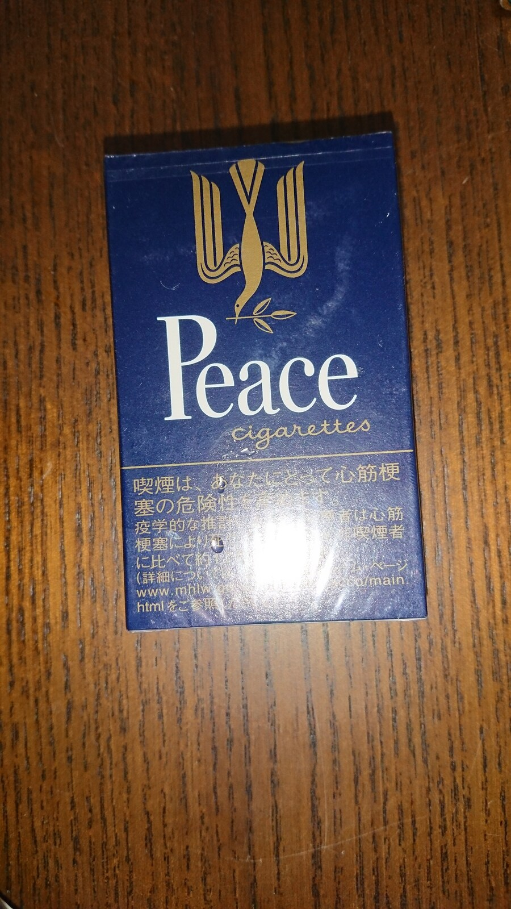
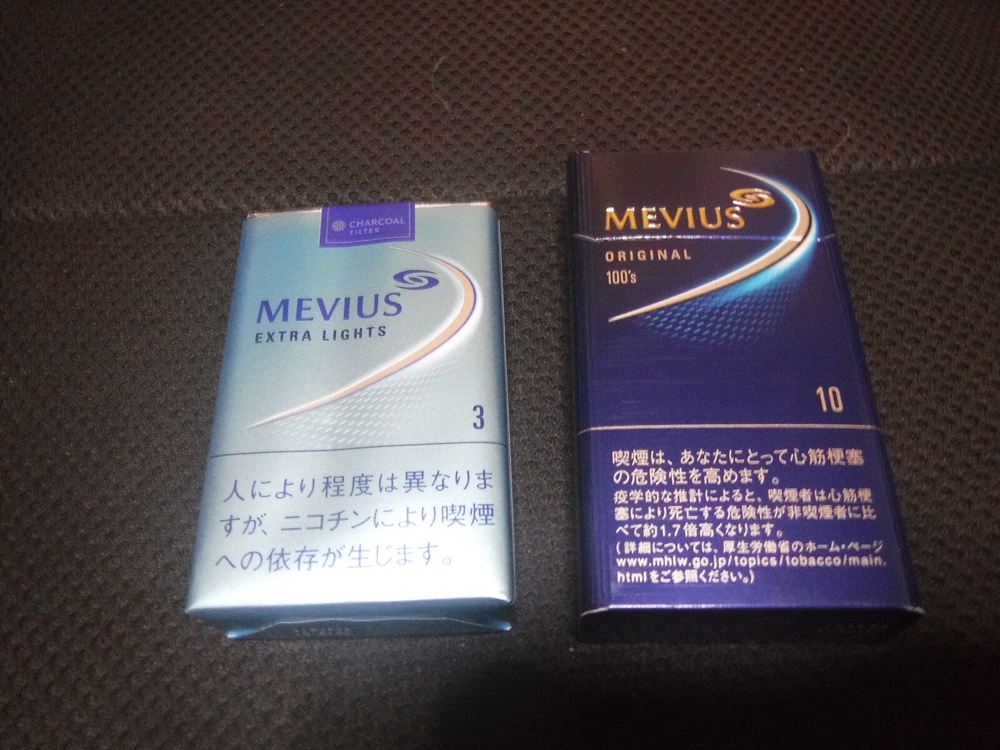

ARCHIVE 001
実物写真で確認
パッケージや形状を、確認可能な資料から見る。
成人向け商品の調査用デモです。未成年者の喫煙は法律で禁じられています。本サイトでは販売・決済を行いません。
 KISARAGIRESEARCH ARCHIVE資料を見る
KISARAGIRESEARCH ARCHIVE資料を見る日本市場のたばこ関連商品を、実物写真・品類・仕様・出典から整理する。売るためではなく、正確に知るための静かな資料アーカイブ。



商品を「広告」ではなく、比較できる資料として見る。
見た目、品類、仕様、出典。必要な情報だけを同じルールで並べ、探す時間と判断のノイズを減らします。
パッケージや形状を、確認可能な資料から見る。
名称の違いを越えて、同じ分類軸で比較する。
掲載できない画像は転載せず、確認先を明示する。
ブランド、品類、仕様、写真が別々の場所にあり、比較のたびに探し直す。
写真だけでも、商品名だけでも全体像はつかめない。共通の分類軸が必要です。
KISARAGIは「どこから確認した情報か」まで資料の一部として扱います。
派手な推薦ではなく、確認可能性を優先。権利条件を確認できない画像は転載せず、出典への導線に留めます。
公開情報と実物資料を収集。
品類・仕様・出典を確認。
共通フォーマットへ整理。
権利条件に沿って表示。
KISARAGIは、商品名を並べるだけのカタログではありません。実物、分類、仕様、出典をひとつの視点で整理し、成人利用者や業務関係者が情報を確認しやすい体験を研究するプロトタイプです。
現在は調査デモとして公開しており、実際の商品販売、決済、配送、個人情報の保存は行っていません。
掲載情報の訂正、権利に関するご連絡、店舗・卸売向けのデモ相談はこちらから。
お問い合わせを作成 ↗※ デモ用連絡先。実運用時に正式窓口へ差し替えます。